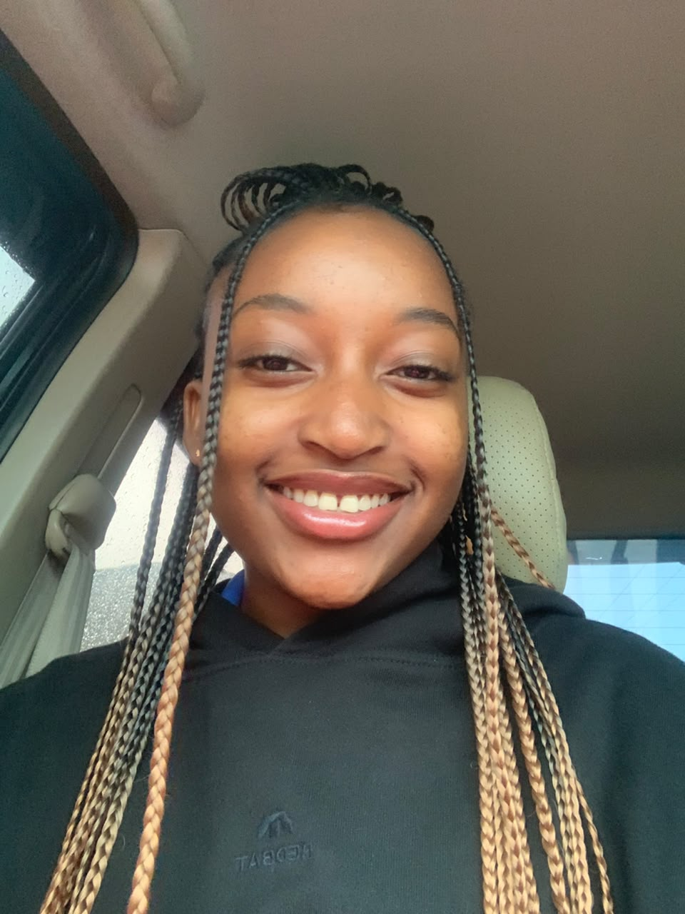
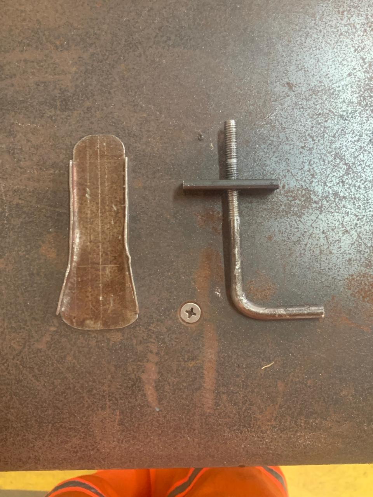
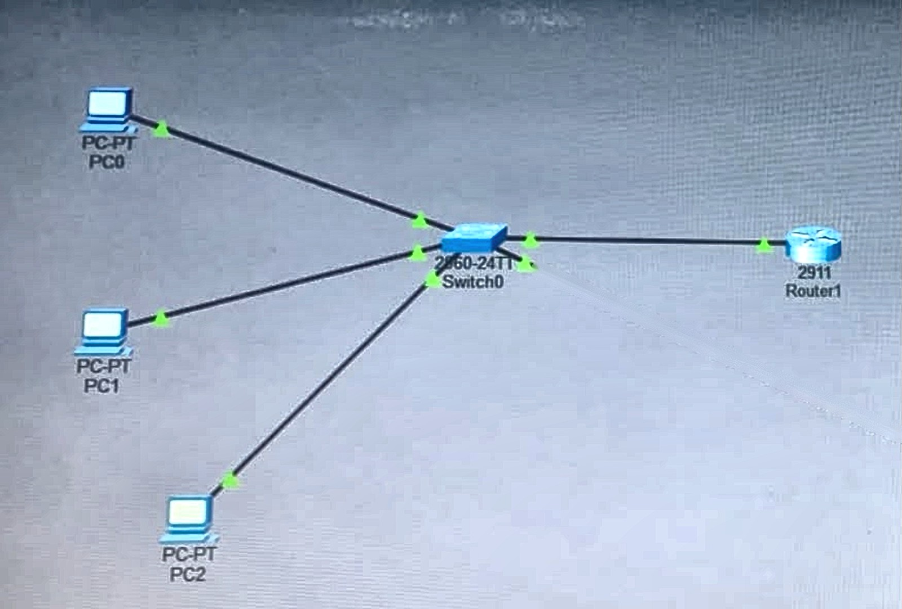
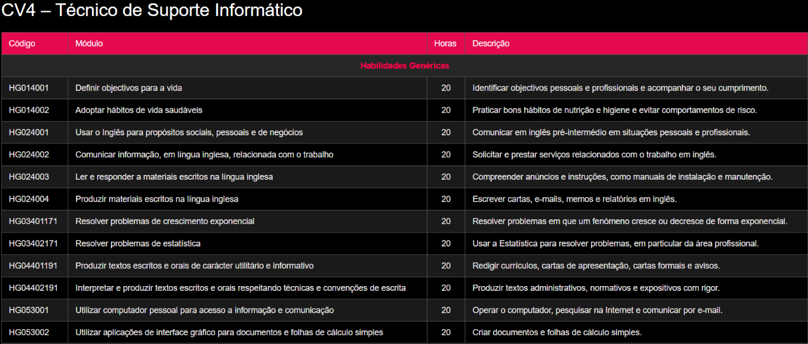

Desenvolvedora Web

Sou uma estudante dedicada, responsável e interessada em aprender coisas novas.
Tenho interesse pela área de Tecnologia da Informação e Comunicação (TIC),
especialmente em informática, programação e desenvolvimento de páginas web.
Entre as minhas principais habilidades estão a utilização do computador,
pesquisa na internet, criação e edição de documentos, utilização de ferramentas digitais e
conhecimentos básicos de HTML e desenvolvimento web.
Skills
Habilidades
Interesses
Estilização de páginas web, incluindo cores,
fontes, espaçamento, alinhamento, bordas e layouts.
Capacidade de criar páginas simples
e organizadas utilizando HTML e CSS.

Projecto de um abre-garrafa, dividido em duas peças
que se encaixam para formar o objecto completo.
Neste trabalho apresento as duas peças separadas,
onde se pode ver a forma e as dimensões de cada uma.
Este projecto permitiu-me praticar a observação de formas,
a precisão nas medidas e a organização
de um objecto em várias partes.

Simulação de uma rede local criada no Cisco Packet Tracer,
com três computadores (PC0, PC1 e PC2) ligados a um switch,
que por sua vez está ligado a um router.
O switch permite a comunicação entre os computadores,
e o router faz a ligação da rede a outros dispositivos.
Este projecto ajudou-me a compreender como os equipamentos
de rede se ligam e comunicam entre si.

Feito com dedicação e curiosidade por Ilka Evelyn © 2026